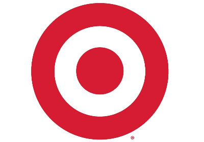
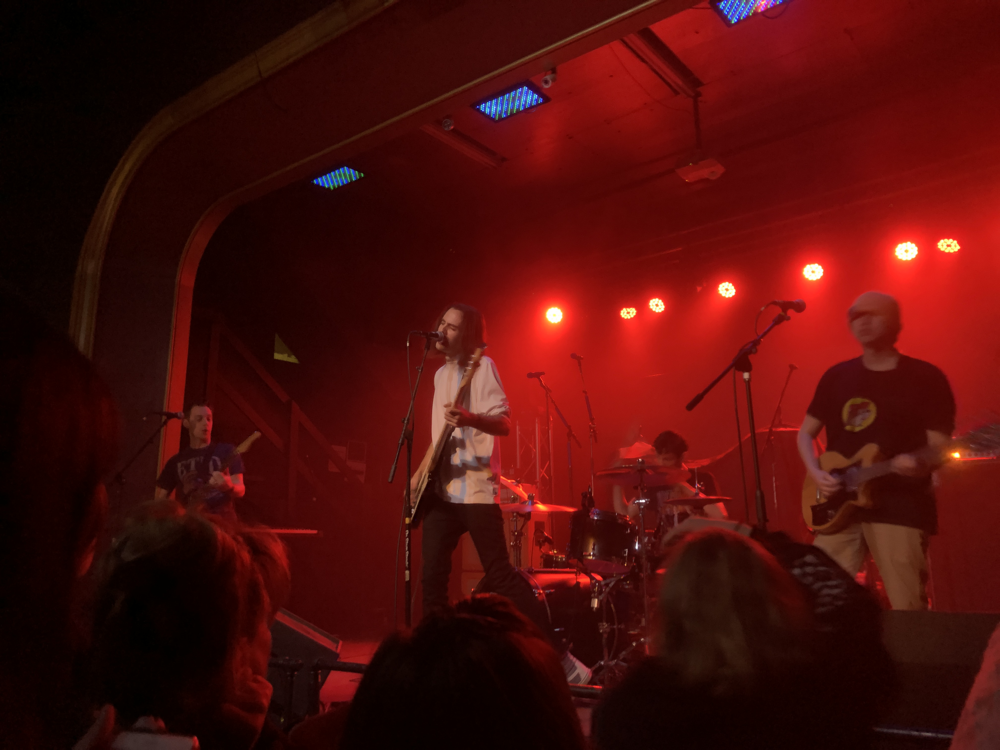

Hello! My name is Mckenzie Fulton, and I am about to start my third year at Edmonds Community College. I am currently studying Web Design and Cloud Development in hopes to be able to create websites within a multitude of different platforms while targeting companies and brands I would like to work with. Edmonds is the third college I've attended since graduating high school in 2014 and ever since I stepped foot on their campus, I knew this was the school for me. Granted I was kind of at a loss for what I wanted to, but after going through a few quarters and digging through the many different degrees offered I stumbled upon Web Design and Cloud Development and that sounded appealing to me and like something I would enjoy. Now here we are 2 quarters later, starting to make some headway within this degree.

I previously have worked at Mcdonalds for approximately 3 and a half years starting as just another crew member, worked my way up to crew trainer, and eventually a shift manager for approximately 2 years within the franchise. Currently, however, I am working for Target and have been with them for just over a year working in the Front End department as a checkout and guest advocate as well as occasionally helping out as a team lead.

I am an avid admirer of music. I will listen to anything from Pop-Punk to Rock to Alternative to Metal to Disney so on and so forth. Having become quite a staple within my life, whether it's sitting at home listening to my favorite band, blasting it through the stereo in my car, or experiencing it live, I honestly don't know where I would be without some of the music I listen to. I have made some of my best friends through the connection of music and have had countless incredible interactions and expeeriences with bands and artists that I wouldn't change for the world.
Thank you for visiting.